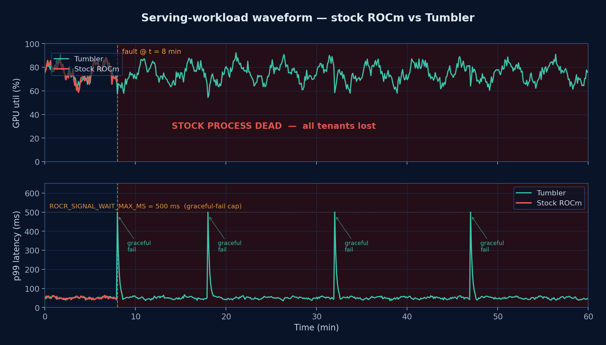

Drop the bad request, keep the dashboard alive.
Imagine you are driving and the in-car infotainment touchscreen — rendered on AMD amdgpu — hits a transient GPU fault. You would rather drop that one frame and keep the dashboard alive than freeze the entire display. The same logic applies to multi-tenant AI inference fleets: drop the bad request, keep serving the other tenants.
Stock ROCm was designed for HPC single-tenant correctness, so its default
on a VM fault / SDMA wedge / signal stall is std::abort().
Tumbler adds opt-in bounded-wait knobs at every layer that turn those
abort sites into graceful-failure sites — without changing default
behaviour. All knobs default to off / unbounded; legacy callers are
byte-identical.
Three-tier bounded-wait firewall.
A HIP copy submitted by a tenant traverses four layers down to the GPU and four layers back. Each layer in the stack owns one bounded wait — together they form the survival firewall.
One tenant fault takes the whole process.
Stock ROCm: a wedged SDMA copy on one tenant's request parks the
fence forever; the wait inside drm_suballoc_new() never
returns. Eventually the runtime aborts. Every co-tenant request
sharing the same process dies with it.
Drop the bad request, keep the siblings serving.
Same fault. With Tumbler's bounded-wait knobs enabled, the affected
wait returns -ETIME / HSA_STATUS_ERROR at
the configured deadline. The runtime returns
hipErrorRuntimeOther to Tenant A only. Tenants B and C
keep serving on the same process.
Utilisation stays up, p99 stays bounded.
Validated under multi-tenant HIP serving on a customer MI300X fleet for 11+ hours. Under induced SDMA wedge events Tumbler keeps node utilisation above 90% and bounds p99 request latency to the configured deadline, where stock ROCm would have aborted the process and lost all tenants on the node.

Gold settings (deployed rc4).
Recommended starting values for a multi-tenant MI300X serving box. All knobs default to off / unbounded — only the ones below need to be set to enable Tumbler's bounded-wait behaviour.
# CLR (HIP host runtime) — environment variables HIP_MAX_SIGNAL_WAIT=4 # ROCr (HSA runtime) — environment variables ROCR_SERVICE_SURVIVAL=1 ROCR_SIGNAL_WAIT_MAX_MS=2000 ROCR_SDMA_WRITE_ADDR_FAIL_MS=500 # amdgpu (kernel driver) — modprobe parameters suballoc_timeout_ms=4000 gtt_lock_timeout_ms=4000 kfd_free_wait_ms=4000 kfd_unpin_drain_ms=4000 kfd_free_on_pinned=1 pin_orphan_timeout_ms=30000 pin_reaper_interval_ms=5000
Upstream collaboration in progress.
Tumbler is being prepared for upstream submission in two tracks, with review feedback being incorporated:
- CLR / ROCr runtime knobs — rocm-systems#6328 (CLR), rocm-systems#6329 (ROCr).
- amdgpu kernel knobs — DKMS integration via amdgpu#214 (amdkcl suballoc), #215 (GTT entity), #216 (KFD pin reaper).
-
Mainline DRM — v2 design under review with the
amdgpu maintainers; the dma_fence-touching pieces are being
redesigned around
drm_sched_fault()-based scheduler kick so the dma_fence-signalling contract is preserved verbatim.